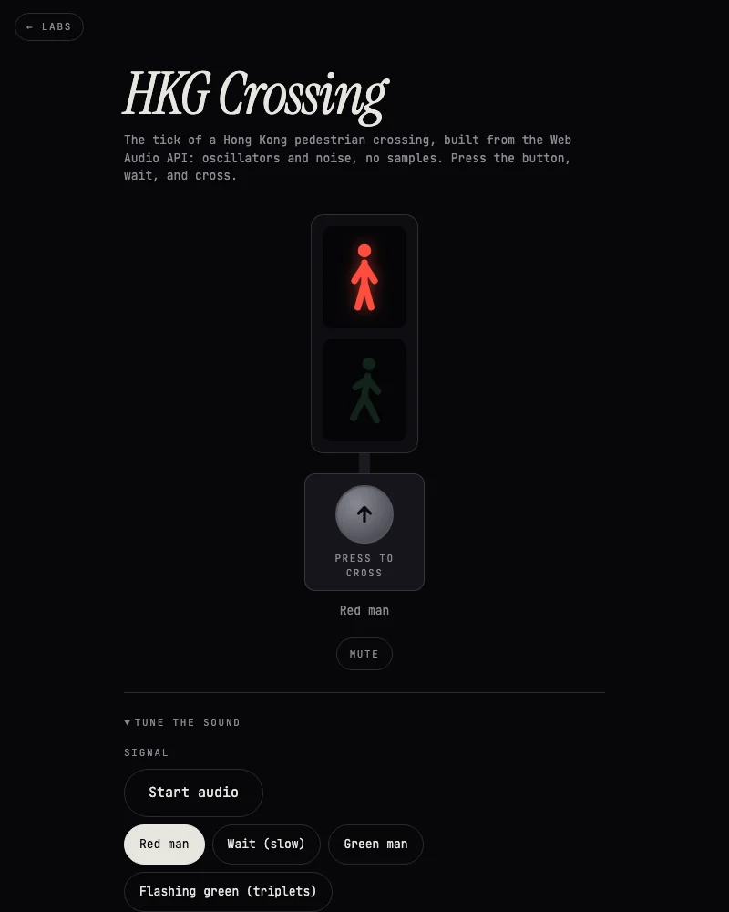
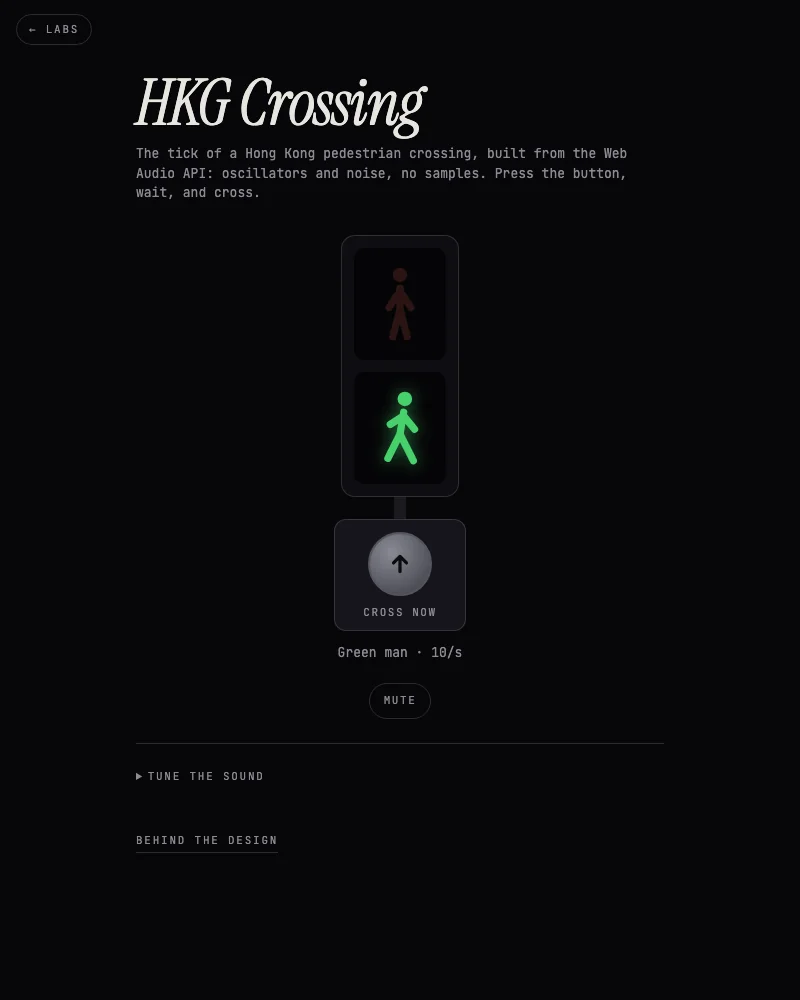
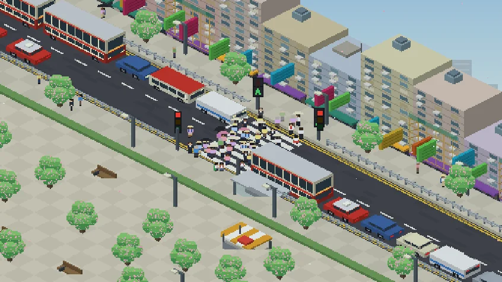
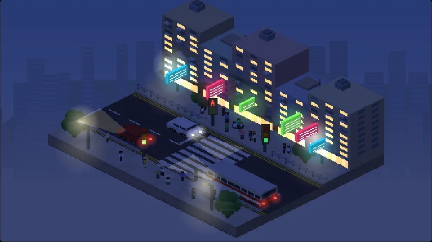
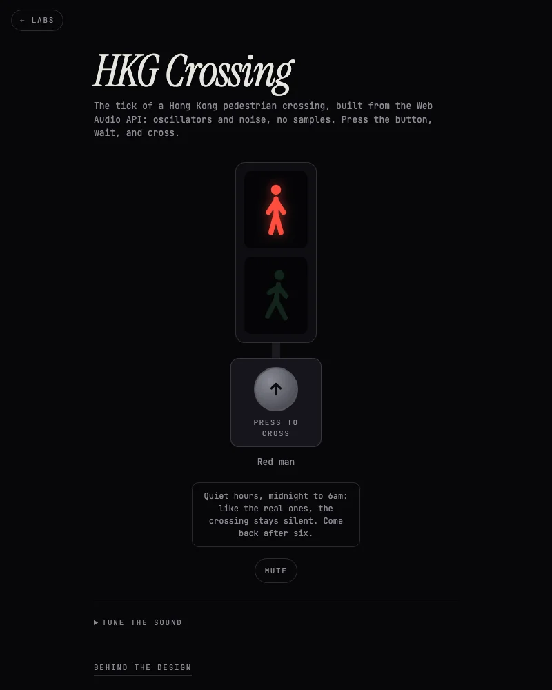

A Hong Kong pedestrian crossing, as sound: a signal, a button, and a tick I tuned by ear until it matched a recording. The story is mostly about sliders.
By Chuck Rice ·
The goal was to build the sound of a Hong Kong pedestrian crossing, not to sample it. I could have recorded one and looped it. I wanted every part of the tick to be something I could turn, so it is all Web Audio: sine and triangle oscillators, a burst of filtered noise for the click, and nothing downloaded. The page ships no audio file.
It also means the sound can be wrong in useful ways. When the tick was off I could say which part was off, instead of throwing the whole recording away. This is the one I was chasing:
Rule: build it from what it is made of, so you can change one thing at a time.
Every stage below is replayed by the same synthesis code the lab uses, at the speed I had it then. I tuned by ear against a recording, one number at a time, and the quotes are what I said at each point. Headphones help.

The tuning panel: every number I changed by ear is still in here. Open it with ?tune.
Rule: keep every step you can hear, and if you can't put a number in words, give yourself a slider.
I'd got the tone and the flaws, but the recording had a hollowness mine didn't: "the style in real recording has a hollowness or reverb to it". So the next two stages add the space. One is reverb from a generated room (fading noise, with the highs dying first). The other is a very short feedback echo, for the boxy, tube-like ring of a unit in a metal housing on a pole.
A 0.5 second room felt "very very close", and once it was in, the pitch wanted to go from -1.15 to -1.00. On my phone the reverb was a bit strong, so the level now sits at 0.2.
Rule: the room is part of the instrument, so tune it with the room on.
A perfect tick sounds like a test tone. A real unit has a speaker that has seen some weather. So I put the flaws back in after everything else was right: each tick differs a little from the last, with a slow drift in pitch, a small wobble per tick, a touch of detune between the three strikes, and the length, level and timing all nudged. One control sets the lot, default 0.5, and 0 gives you the machine-perfect version back.
Same sound, same settings, twice:
Rule: the flaws are the likeness.
A set of buttons wasn't enough, so the page is now the thing itself: a signal and a button. Press it and the red man waits on a slow tick, then the green man comes in fast at ten ticks a second, then it flashes in bursts of five with a pause, then back to red. The first order I tried was wrong and I fixed it from what I remember of the real one. The pause between bursts (0.71 seconds) was the one number I didn't have to touch.
The red man never goes silent: it ticks once a second, before and after your crossing, because that is how I remember them.

The green phase, previewed silently with ?phase=walk (also wait and clear).
Rule: ask the person who has heard it.
A lamp and a button were enough to carry the sound for a while, but a crossing is really about the people on it. So the page is now a small isometric Hong Kong street, drawn entirely in code with no image files: tenements with air-con units and neon signs, tall double-decker buses, red taxis and minibuses driving on the left, and a proper crowd. Press the button and it plays out on the street. The crowd gathers at both kerbs while the car lights go amber, then red. The scramble starts on the green man, the last few hurry on the flashing green, and the traffic pulls away when it's over.

The green man: cars stopped at the lights, the crowd on the zebra. Preview any moment with ?phase=wait, walk or clear.
It follows your clock, too. After 7pm the neon and the windows light up and the headlights come on, and between midnight and 6am the street goes quiet along with the sound. The sound and the picture share one set of phases, so they can't drift apart.

The same street at 10pm, with the crowd gathering while the lights change. Try ?hour=22.
Rule: one clock for the sound and the picture, so they can't drift apart.
From midnight to 6am, local time, it stays silent and says so. A sound built to help one person cross is noise to everyone sleeping above the road, so at night it gets the night off. There is a Mute button for the rest of the day. The level is also lower than my first version, which was louder than YouTube or a game running in another tab and would have been uncomfortable for a visitor: it now plays at 40% of that level, with no volume control to fiddle with.
Browsers won't play sound before you touch the page, so the ticking starts the first time you press the button. After that, the red man keeps ticking between crossings. ?hour=2 pretends it's 2am if you want to see the note.

The night note. It appears on load and when you press the button.
Rule: a sound made to help one person is noise to everyone else, so give it a night off.
I built this with Claude, which can't hear any of it. The code and timing were checked in a headless browser: the phases run in order, ticks land 0.1 seconds apart inside a burst with a 0.71 second gap, and the red man ticks once a second. Whether it sounds right was my call by ear, against a recording, on my Mac, and then on my phone, where it works. The street was checked in a headless browser (the phases, the crowd gathering and crossing, the traffic stopping, the night look) and has not been tried on a real phone yet.
It is a first pass. I want to refine it more, but it is good enough to share.
Rule: say who made which call.